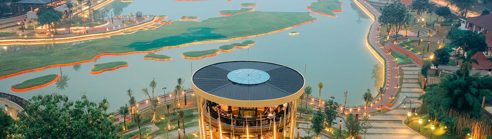

Menjumpai dan menikmati keindahan serta keberagaman budaya,flora, fauna Indonesia,
Sekaligus mendapatkan pengalaman yang edukatif.
Mari Jelajah Cerita Indonesia yang seru ga ada habisnya
dan jadilah pemeran utama dalam setiap kegiatan di TMII.

TMII
Dulu dan Kini
Dari Sabang hingga Merauke, ribuan ragam corak adat dan budaya telah melengkapi berbagai aspek kehidupan di
Indonesia. Masing-masing adat dan budaya Indonesia ini telah menjadi identitas setiap daerah di seluruh
penjuru nusantara. Kekayaan nusantara inilah yang menjadi gagasan pembangunan Taman Mini “Indonesia Indah”
(TMII) oleh Ibu Negara Siti Hartinah, atau yang lebih dikenal sebagai Ibu Tien Soeharto. Berdiri di atas
area seluas 150 hektar, Taman Mini “Indonesia Indah” hadir sebagai rangkuman kebudayaan 33 provinsi bangsa
Indonesia dalam bentuk miniatur kepulauan nusantara lengkap dengan anjungan daerah, bangunan dan arsitektur
tradisional, kesenian daerah, taman rekreasi, dan berbagai macam wahana yang menawarkan sarana seni,
rekreasi, dan edukasi bagi pengunjung.
Transformasi #WajahBaruTMII diperkenalkan ke publik pada awal September 2023 sebagai ikon wisata kultural
dan sarana edukasi akan keragaman budaya Indonesia. TMII juga yang menawarkan pengalaman yang
#SeruGakAdaHabisnya melalui banyak kegiatan seni yang mengikutsertakan pengunjung dalam setiap aktifitasnya.
#WajahBaruTMII hadir dengan mengusung 4 pilar, yaitu green dengan konsep eco-park di mana 70% areanya
merupakan area hijau, inclusive untuk semua lapisan masyarakat, culture di mana TMII menjadi destinasi
wisata yang mempresentasikan ragam budaya Indonesia, dan smart sebagai fokus dalam implementasi platform
digital.